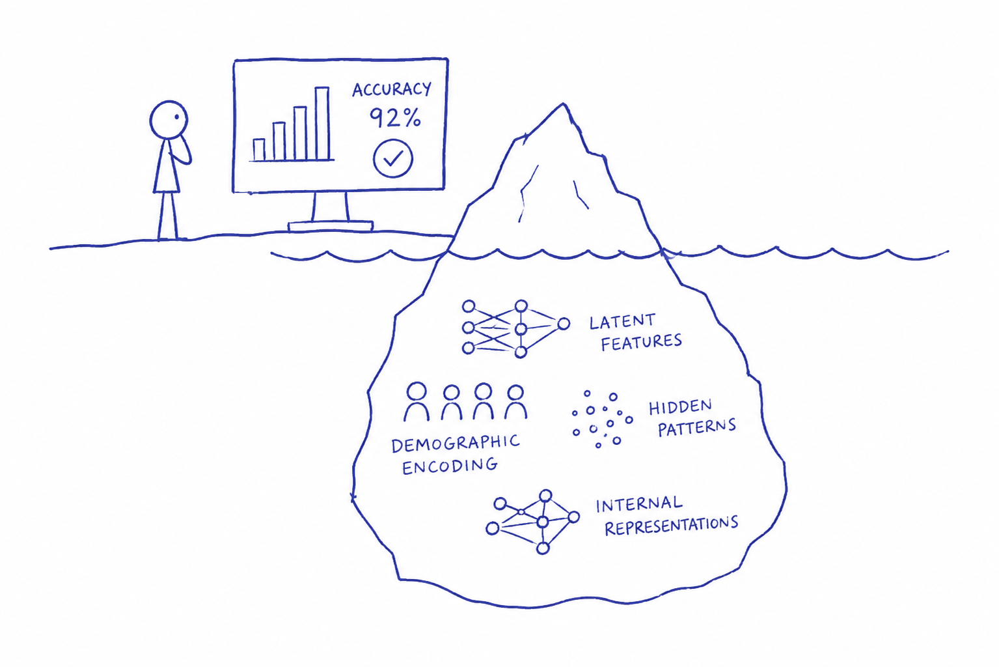
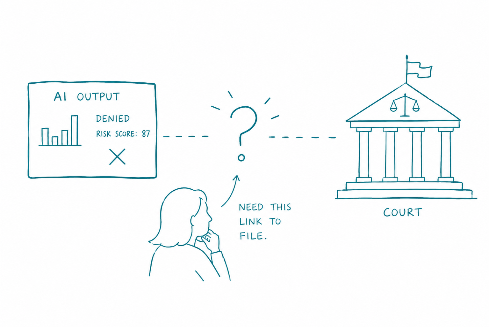
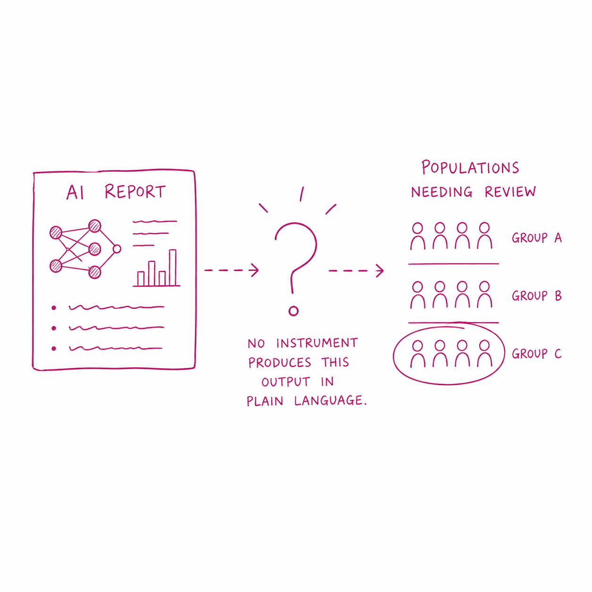
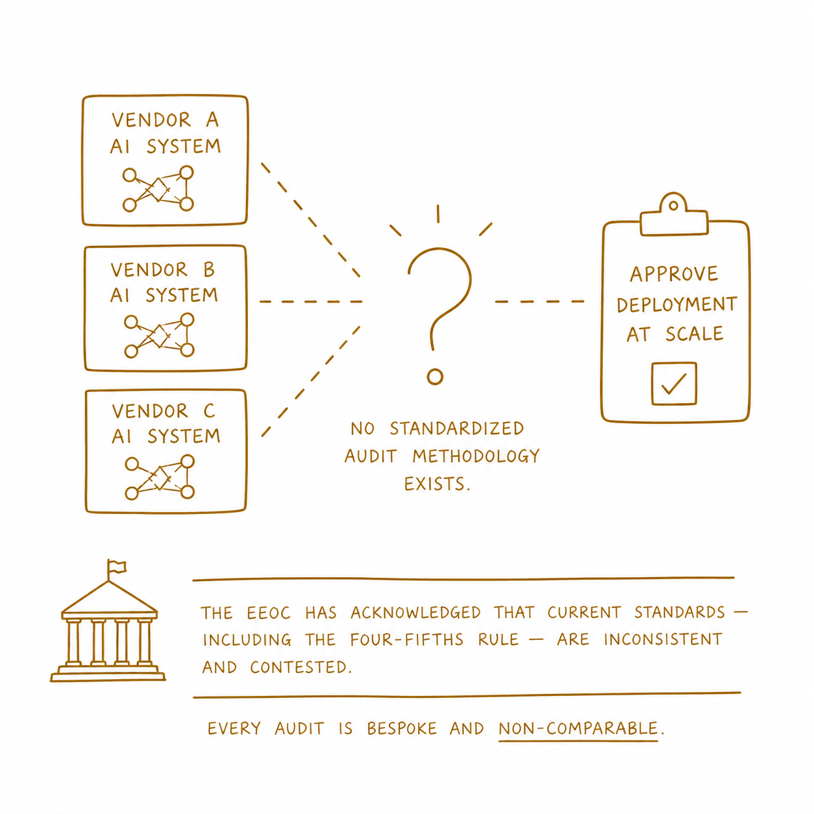

AI Governance has a design problem
AI safety evaluation fails when it measures behavior without interrogating the mechanisms underneath.
Every major AI safety framework in use today evaluates behavior. Models are red-teamed, benchmarked, and fine-tuned until their outputs appear aligned. Then they are deployed.
But behavioral compliance and mechanistic alignment are not the same thing. A model can pass every safety evaluation while carrying causally active demographic encoding in its residual streams — encoding that behavioral benchmarks will never surface, that no current governance instrument requires anyone to look for, and that affects real decisions about real people in healthcare, hiring, and public benefits.
The gap is not technical. The methodology to run representation-level audits exists. The gap is governance: no framework requires it, no institution demands it, and no instrument exists to communicate its findings to the humans who need to act on them.
This proposal designs that instrument.

AI governance assumes that safety and equity frameworks together cover the full model lifecycle. They do not. Scroll through to see where each field operates — and where neither of them reaches.

The encoding that shapes real decisions about real people happens here. No framework currently requires anyone to look.
The gap is not abstract. Four specific users encounter it in practice — and all six currently lack the instrument they need to act on what they know.







Each of these users faces the same structural problem from a different angle. The hospital procurement officer needs a deploy/don’t-deploy signal. The civil rights attorney needs legally admissible causal evidence. The benefits administrator needs plain-language population risk disclosure. The regulator needs a standardized methodology that works across vendors.
None of them need the same output. But all of them need the same underlying thing: a representation-level audit that is independent, legible, timely, and comparable. The requirements matrix below maps exactly what each user needs — functionally, contextually, and against the current state of the field.
The current state column tells the same story eight times. Nothing exists.

The requirements matrix surfaces the full scope of the instrument design problem. Each user needs the audit to be:
No existing instrument satisfies any of these simultaneously.
The AI governance ecosystem is not empty. Behavioral audits, red-team evaluations, model cards, procurement requirements, community audits, whistleblower protections — all of these exist. The map below shows every major governance instrument currently operating across Prevention, Accountability, Detection, and Verification.
Look at it as a system. Now find the Mechanistic-Informed Audit Standard.
It isn’t there.


Three fields exist that are each necessary but none sufficient:
Mechanistic Interpretability — from AI Safety. Has technical access to model internals, can run causal intervention, residual stream analysis, linear probing, activation patching. Currently stays inside labs. Findings do not reach governance actors.
Community Accountability — from AI Equity. Has legitimacy, community standing, civil rights framing, participatory design methods. Currently lacks the technical depth to reach the representation layer.
Instrument Design — from Design and HCI. Has methods for building governance artifacts that work for non-technical users, artifact evaluation, think-aloud protocols, co-design methods. Currently has no established domain in AI governance.
Governance Verification — an independent, standardized, representation-level audit that produces outputs legible to the six users in the stakeholder framework — is what the intersection of all three must produce. It currently does not exist in any field’s scope.
AI Governance Instrument Design is the name of the domain that would produce it.
The Mechanistic-Informed Audit Standard specifies four requirements for high-risk AI deployment contexts:
The audit must operate at the residual stream level — not behavioral outputs. Linear probing and causal activation patching are the minimum methodological requirements. The audit must identify whether demographic encoding is causally active, not merely present.
The auditor must be independent of the developer. No self-certification. No internal interpretability team producing findings that never leave the organization. An independent audit infrastructure for representation-level analysis does not currently exist and must be built.
Findings must be communicable to non-technical users — hospital procurement officers, civil rights attorneys, community health workers — without requiring ML expertise to interpret. The current output of mechanistic interpretability research is academic papers. That is not a governance instrument.
The methodology must produce comparable results across model families and vendors. Every audit being bespoke and non-comparable is not a minor inconvenience — it is the reason regulators cannot do their jobs. Standardization is a prerequisite for enforcement.
The technical methodology to run representation-level audits exists. TransformerLens, linear probing, causal activation patching — these are established tools. The BBB study used them across eight open-weight models and confirmed that instruction-tuned models carry causally active demographic encoding in their residual streams while displaying behavioral compliance.
The gap is not in the science. It is in the instrument.
A governance instrument is a designed artifact — it has users, contexts, constraints, legibility requirements, and failure modes. Designing one requires the same methods used to design any artifact that non-expert users must act on under real-world constraints: user research, requirements analysis, contextual inquiry, artifact evaluation, iterative prototyping.
That is why this proposal sits at the intersection of mechanistic interpretability and HCI. The science surfaces the finding. The design makes it actionable.
This proposal is the governance response to the empirical findings of Beyond Behavioral Benchmarks — a mechanistic interpretability study across eight open-weight models confirming that instruction-tuned models display behavioral compliance while carrying causally active demographic encoding in their residual streams.
BBB establishes that the problem is real, measurable, and reproducible. The Mechanistic-Informed Audit Standard establishes what governance must do about it.
BlueDot Rapid Grant awarded to extend the replication pipeline.
A proposal this early forces a kind of honesty: what it claims, what it still cannot deliver, and what has to be true before an argument becomes infrastructure.
The points below sit with that tension — the claim itself, the design work still ahead, the kill-chain that motivated it, and the distance between a framework on the page and an instrument in the world.
The central claim is not that AI systems are biased — that claim is well established. The central claim is that the governance infrastructure built to address bias is structurally incapable of seeing the layer where bias is encoded. Behavioral evaluation is not a flawed implementation of the right idea. It is the wrong instrument applied at the wrong layer of the lifecycle. The proposal does not ask for better behavioral benchmarks. It asks for a different kind of audit at a different point in the system.
The proposal specifies what the instrument must do. It does not yet specify the full methodology for producing audit outputs that satisfy all six user requirements simultaneously — particularly the tension between legibility for non-technical users and technical rigor sufficient for litigation. That tension is a design problem that requires co-design with affected stakeholders, empirical testing of output formats, and iterative refinement across real procurement and legal contexts. That work is what the BlueDot grant funds the beginning of.
The AGI Strategy course required a kill-chain analysis — a structured examination of how a specific catastrophic risk pathway could materialize. The analysis centered on power concentration via unaudited demographic encoding: a scenario in which AI systems deployed at scale in healthcare, hiring, and public benefits systematically disadvantage specific populations in ways that behavioral evaluation cannot detect, producing compounding harm that becomes structurally embedded before anyone with standing to act has the evidence to do so. The Mechanistic-Informed Audit Standard is a direct response to that kill-chain. It is designed to interrupt the pathway at the governance layer before the compounding begins.
A proposal is not an instrument. The Mechanistic-Informed Audit Standard exists as an argument and a framework. The instrument itself — the standardized methodology, the output format, the independent audit infrastructure, the regulatory mandate — does not yet exist. Building it requires cooperation between mechanistic interpretability researchers, governance institutions, affected communities, and the legal system. This proposal is the design brief for that collaboration.